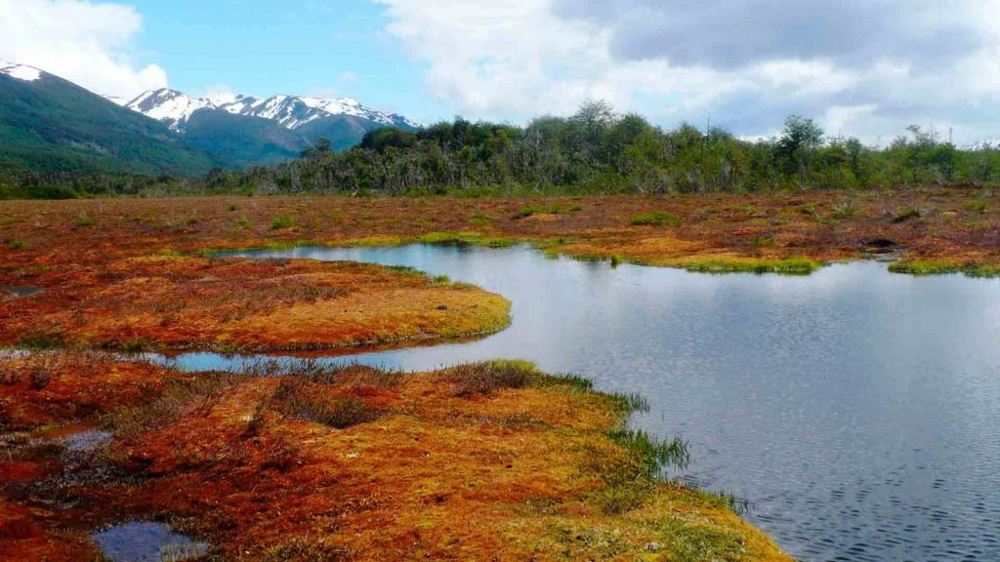

2 Introducción

Un tipo de ecosistema clave para combatir los efectos del cambio climático son las denominadas turberas, ya que desempeñan un importante papel en la regulación del clima a escala mundial, siendo uno de los reservorios terrestres más importantes del planeta (Parish et al. 2008). Las turberas pueden retener aproximadamente un tercio del carbono (C) de los suelos (Moore et al. (2002), Roig and Roig (2004), Asada and Warner (2005)). No obstante, cuando estos ecosistemas se degradan o alteran, sobre todo para usos que incluyen el drenaje de la tierra para cosechar turba o para cultivar con arado, pueden convertirse en fuentes significativas de Dióxido de Carbono (CO_2) (Parish et al. 2008). Las emisiones de gases de efecto invernadero producidas por la degradación y la quema de turberas ha aumentado considerablemente en los últimos años, y se calcula que podrían superar los 2 \times 10^9 Mg C yr^{-1} (Joosten et al. 2009). Por ello, en el último informe del Grupo Intergubernamental de Expertos sobre el Cambio Climático (Settele et al. 2014) se afirma que la conservación, restauración y rehumidificación de las turberas degradadas es una medida eficaz para mitigar las pérdidas de C.Según lo expuesto anteriormente, se puede entender su importancia a nivel medioambiental tanto global como local, ya que se encuentra ampliamente presente en el sur de Chile.
En Chile, Joosten and Clarke (2002) estimaron la superficie de turberas en 10.470 km^2, concentrada en las regiones de Aysén y Magallanes, en el sur de Chile, y correspondiente al 1,4% del territorio nacional (Schlatter and Schlatter 2004). En la Isla de Chiloé (Región de Los Lagos), como consecuencia de la acelerada colonización humana, vastas extensiones de bosques fueron quemadas o taladas para obtener madera o para preparar la tierra para la agricultura o la ganadería (Cabezas et al. 2015). Como resultado, las zonas de drenaje deficiente fueron colonizadas por musgos Sphagnum (principalmente S. magellanicum) o por matorrales sucesionales (Marı́a F. Dı́az and Armesto 2007) (M. Francisca Dı́az, Bigelow, and Armesto 2007), lo que fueron denominados “turberas antropogénicas” (Marı́a F. Dı́az et al. 2008), (León and Oliván 2014), estos ecosistemas han registrado tasas de acumulación reciente de C superiores a las de las turberas de origen glaciar debido a que las turberas antropogénicas, al ser ecosistemas más recientes, son más activas (León and Oliván 2014). Además, este tipo de turberas antropogénicas tienen una gran capacidad de retención de agua (Iturraspe and Roig 2000). Las turberas naturales, así como las antropogénicas presentes en la zona sur de Chile, tienen diferencias en su concepción e interacción con el entorno. Sin embargo, ambas comparten el riesgo de destrucción o degradación debido a actividades antrópicas o naturales, por lo que es necesario monitorearlas para su protección y conservación.
Entendiendo la importancia ambiental de las turberas, nace la necesidad de proteger y conservar este ecosistema. En este contexto, el estado de Chile se adscribe a la Convención de Ramsar (Decreto Nº 771 de 1981 del Ministerio de Relaciones Exteriores), que define zonas húmedas de importancia internacional especialmente como hábitat de las aves acuáticas,incluidas las turberas, incluidas las turberas . Posteriormente, mediante la Ley N°19.300 de 1994, Ley sobre Bases Generales del Medio Ambiente, se señala que los proyectos o actividades susceptibles de causar impacto ambiental en cualquiera de sus fases deberán someterse al sistema de evaluación de impacto ambiental (SEIA). En su artículo Nº 10, se incluyen obras o actividades, incluyendo drenaje o desecación, que puedan significar una alteración física o química a los componentes bióticos, entre otros “la extracción de la cubierta vegetal de turberas”. En razón a lo anterior, posteriormente se declararon territorios de la provincia de Chiloé como Santuarios de la Naturaleza, como las Turberas Púlpito, Aucar y Punta Lapa. Para proteger y conservar estos santuarios y las demás turberas, se encarga a la Superintendencia del Medio Ambiente (SMA). Sin embargo, esta labor se dificulta por los recursos deficientes para disponer de personal suficiente y sumado a la gran cantidad de territorios que fiscalizar, entonces se hace necesario contar con un sistema de monitoreo ambiental a mayor escala, como lo que se puede obtener haciendo uso de imágenes satelitales.
Dado que el Estado de Chile reconoce la necesidad de proteger y conservar las turberas de la provincia de Chiloé, es esencial contar con un sistema de monitoreo que permita evidenciar los cambios en el territorio protegido de forma periódica. Se utilizar información satelital, cuya disponibilidad y potente capacidad computacional para realizar análisis complejos ha fomentado su uso en el monitoreo de recursos naturales en diferentes partes del mundo. La región de estudio es una isla ubicada en la zona sur del país. Durante gran parte del año, presenta condiciones de nubosidad, lo que dificulta el uso de imágenes ópticas. Una alternativa son las imágenes satelitales tipo Radar de Apertura Sintética (SAR). Los métodos de detección de cambios basados en SAR son independientes de las nubes y la iluminación, pero sin embargo se han utilizado mucho menos debido a su limitada disponibilidad temporal y espacial, sus costes más elevados y sus requisitos de procesamiento más intensivos (Hecheltjen 2014). Gracias al satélite tipo radar Sentinel-1 de la Agencia Espacial Europea (ESA) que ofrece acceso libre a los productos, los métodos de detección de cambios basados en el SAR pueden utilizarse ahora de forma más eficiente para superar algunas de las restricciones de los métodos basados en la óptica. La alta resolución temporal (seis días considerando Sentinel-1A y -1B en el Ecuador), la alta resolución espacial y el amplio barrido permiten disponer de un sistema operativo de detección de cambios muy necesario, sin costes, a prueba de nubes e independiente de la iluminación (Muro et al. 2016). Entonces las imágenes tipo radar presentan presentan beneficios para sistemas de detección de cambios bajo diferentes condiciones atmosféricas, pero también presentan un par de desafíos al trabajar con ellas, como son el ruido de moteado, lo que requiere el diseño de técnicas robustas para la detección de cambios..
La presencia de ruido moteado (speckle) es un problema significativo en la tarea de detección de cambios en imágenes SAR. Este tipo de interferencia, conocida como ruido moteado, se presenta como una forma de ruido multiplicativo que degrada la calidad de la imagen y puede generar falsas detecciones de cambios (Wu et al. 2019). Por lo tanto, la detección de cambios en imágenes SAR sigue siendo una tarea difícil (Pham, Mercier, and Michel 2016). Es fundamental diseñar técnicas robustas de detección de cambios que sean efectivas en la supresión del ruido moteado (speckle) (Saha, Bovolo, and Bruzzone 2021).
Para lograr los objetivos de identificar la perturbación antrópica de las turberas en Chiloé, es necesario establecer un proceso de identificación y análisis utilizando imágenes satelitales. Este proceso se conoce como Detección de Cambios y consiste en comparar imágenes tomadas en diferentes momentos para detectar y cuantificar los cambios ocurridos en un área específica. La detección de cambios satelitales se basa en el análisis de las diferencias espectrales entre las imágenes, lo que permite identificar las áreas que han experimentado cambios en su composición o características (Zhu, Qiu, and Ye 2022). Esta metodología es ampliamente utilizada en diversos campos, como la monitorización ambiental, la gestión de recursos naturales, la planificación urbana y la evaluación de impacto ambiental . Para llevar a cabo esta tarea, se utilizan técnicas de procesamiento de imágenes y algoritmos de detección de cambios, incluyendo el uso de técnicas de aprendizaje automático supervisado y no supervisado.
En esta tesis se destaca la urgencia de proteger y conservar las turberas, especialmente en Chiloé, Chile, dada su importancia en la regulación global del clima y la retención de carbono. La degradación de estos ecosistemas, ya sea por actividades humanas o naturales, puede contribuir significativamente al cambio climático. La propuesta de un sistema de monitoreo a mayor escala mediante imágenes satelitales, específicamente utilizando el satélite Sentinel-1 y tecnologías SAR, ofrece una solución eficiente. La solución propuesta es mediante métodos de cambio no supervisado, utilizando métodos convencionales clásicos que posteriormente será clasificado haciendo uso de un modelo de segmentación semántica pre entrenado llamado Segment Anything Model SAM (Kirillov et al. 2023), ajustado para operar con imágenes espaciales tipo radar. La implementación exitosa de este sistema no solo contribuirá a la protección y conservación de las turberas en Chiloé, sino que también promoverá la sostenibilidad a largo plazo de estos ecosistemas críticos.